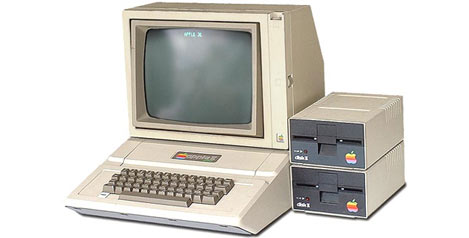
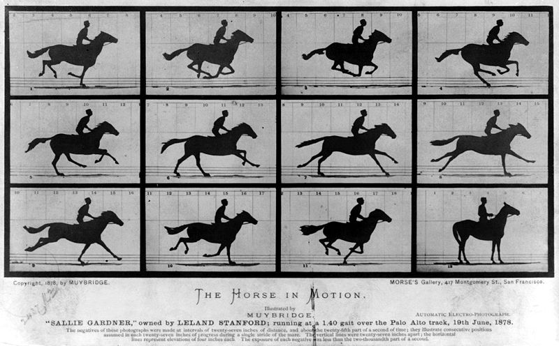
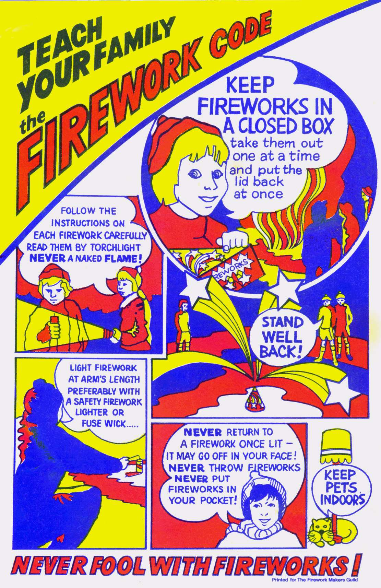

|
|
|
||||||
Computers |
|
-I can do defrags. -I can delete browsing history. -I have used a hexidecimal editor to get millions of dollars in a video game (not illegal if its an offline game). -With help, I can upgrade desktop computers ram and video cards. -I know how nto unzip files (easy). -I can Sync a ps3 controller to a computer for usage in a video game. -I know how to change the rezolution and theme/ clolour of a computer. - I can use every day applictations and know how to download/install programs. - I understand the danger of computer viruses and Malware. I know how to use AVG and Malware Bytes. - I can use every day applications and more. -I know how to use rain meter, in order to make my desktop look nicer and more accessible. |
 |
Photo Editiing |
|
-I can make photo-shop animations with Gif Ninja (As seen in background) fairly well. -I can use photo shop to edit pictures. I have an afinity to this skill. -I know how to use photo editors (Pixlr, etc). I can use simple sites to create complex images. - I know how to edit photos on a multi layer scale - I know how to make things in a picture disapear or how to add somthing to a picture - I can use every PS tool eficiently and am able to produce various effects. - I know how to add pictures, how to adjust the size of my template and more. - Over the summer, I learnt more about photoshop on my own, for example, I know how to add effects to somthing as simple as a color, and make it into a texture. I can also edit people into or out of a picture much better. |
.jpg) |
HTML/Dream Weaver |
|
-HTML allows me to make simple weppages but I can improve the over all appeal by using CSS and photoshop -I know how to add video games to html. As well as youtube videos music and snow falling effects. - I know how to add links, pictures, and background pictures - I know how to make a small picture resize for a website's background -I know how to use tables - I can change the format -I can use two bg images in order to make a scrolling effect (I made one bg 10000px long while the other is fixed and follows you). - I can do every thing from Html and then some -In Dream Weaver, I make more advanced weppages, like the one you see here, by using CSS. It was very hard but I'm glad I learnt - I can add swfs' - know how to add rollover images - I know how to use cooltext and flamingimage - I don't know how to script but have used others- I can use CSS in order to make images, tables and even text draggable. This means that I can position items like a table more freely, rather than aligning them. |
 |
Video |
|
-I have become profiecient with Adobe Premier, and think that knowing this app is what has gotten me high marks in many projects/presentations that I have made thorugh premier. I enjoy animating pictures in it and edditing its effects, tansitions and sound. -I've gotten basic knowledge in Adobe After Effects. -I know how to use particle effects in multiple ways (making lines, bubbles, etc). I love them. -I can use different shapes to create the illusion of a 3D shape. -I can make said shape materialize, look like moving water, spin, etc. -I can make fancy bg colors. |
|
Animation |
|
| -I am an amateur at animation and have experience in Pivot Stick Figure Animator & Adobe Flash Professional. I know how to animate frame by frame, or by tweening. I know how to use the bone tool and have been praticing character and scene design. I hope to create a top of the line short by the end of this year. |  |
Music |
|
- I can use mixcraft and garage band with proficiency - I am not the best musical editor, but feel that edditing sound for a film or special effects is easier. - I need to work on my recording skills, as I still make feedback. |
 |
Phones |
|
- I know how to install aps and edit files in it via my computer - I also know the basics (duh) |
|
Fireworks |
|
- I am able to make slices and hotspots, which can be used to open tabs in a variety of ways. - I can make disjointed rollovers and simple rollovers. - I personally prefer FW, but it's limited page sizes make it hard to work around. - Because FW has similar atributes to PS, etc, I am able to do a variety of things to the site's appearance. This includes my favorite part of FW, the fact that you don't need CSS to move images freely - I know how to make FW pngs into HTML sites. |
 |
See what else I know here. |